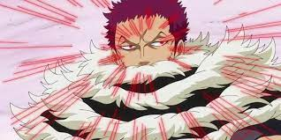
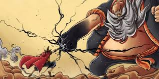
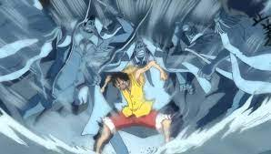

Tipos de Haki
- Kenbunshoku Haki
-
Kenbunshoku Haki é uma forma de Haki que permite ao usuário sentir a presença de outras pessoas, mesmo que elas estejam ocultas ou muito distantes de serem vistas naturalmente.

- Busoshoku Haki
-
Busoshoku Haki é uma forma de Haki que permite ao usuário usar seu espírito para criar, em essência, uma armadura invisível em torno de si, fornecendo capacidades ofensivas e defensivas potencialmente incríveis.Notavelmente, essa forma de Haki pode ser usada para ferir usuários de Akuma no Mi que são imunes a certos tipos de danos físicos, principalmente usuários de Logia.

- Haoshoku Haki
-
Haoshoku Haki é uma forma rara de Haki que não pode ser obtida por meio de treinamento. Apenas um em vários milhões de pessoas tem essa capacidade. Esse tipo de Haki permite que o usuário exerça sua força de vontade sobre os outros.
